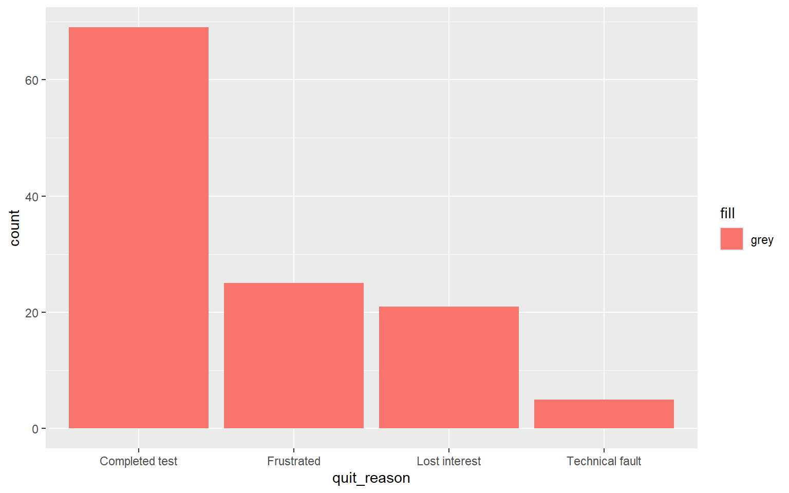

library(readr)
library(dplyr)
library(ggplot2)
sessions <- read_csv("data/tidebreak_sessions.csv", show_col_types = FALSE)
nrow(sessions)[1] 120Stage 3A clinic: ggplot2 on Tidebreak, then on your own playtest data
This is a clinic, not a full lab. It is short, and it ends with your team’s own data. The aim is one thing:
One figure from your own playtest data that you would put in the final report.
Part A is a warm-up on Tidebreak: rebuild two plots you already know in ggplot2, then build and fix the kind of figure a report needs. Part B is your project. Bring your team’s latest playtest export, in your project’s data/ folder.
| Function | What it does |
|---|---|
ggplot(), aes() |
Start a figure: the data, and which column drives which axis or colour |
geom_histogram(), geom_bar(), geom_boxplot(), geom_point() |
The marks: bars, boxes, points |
facet_wrap() |
One panel per group, on shared axes |
labs() |
Title, axis and legend labels |
By the end of this clinic you can:
ggplot2, and point to the data, mapping and geometry;ggplot2.library(readr)
library(dplyr)
library(ggplot2)
sessions <- read_csv("data/tidebreak_sessions.csv", show_col_types = FALSE)
nrow(sessions)[1] 120If library(ggplot2) fails, run install.packages("ggplot2") once in the Console.
Notes for this part: Visualising with ggplot2.
[Do]Redraw Lab 01’s histogram of score in ggplot2, with bins 100 points wide and a title and axis labels a reader could follow.
Write 1 sentence: point to the data, the mapping and the geometry in your code.
[Do]Redraw Lab 01’s boxplot of score by archetype in ggplot2, with labels.
Write 2 sentences: the Sentinel box is the widest. Draw the Sentinel scores as a histogram and say what the box was hiding.
[Apply]A teammate made this figure for the report to show how sessions ended in each build. Find three things wrong with it, then fix them.
ggplot(sessions, aes(x = quit_reason)) +
geom_bar(aes(fill = "grey")) +
labs(x = "quit_reason")
Write 1 sentence: which of the three problems would most mislead a producer who glanced at the figure for five seconds?
[Decide]The report has room for one figure about enjoyment. Draw two candidates: a boxplot of enjoyment by build, and a bar chart of enjoyment faceted by build. Decide which one goes in the report.
Write 2 sentences: write the caption for the figure you chose. State the takeaway, not the name of the chart.
[Decide]This is the part that matters. Allow at least half the clinic for it.
Work through these steps on your team’s own playtest data. Do it in a Quarto document in your project, so the figure is already in the format the report needs.
read_csv() and look at it with glimpse(). Check the types of the columns you need (rule 3).hist() or boxplot() to see the shape before you design anything.ggplot2: data, mapping, geometry.```{r}
#| label: fig-our-finding
#| fig-cap: "The takeaway, as a sentence, with n."
#| echo: false
ggplot(our_data, aes(x = ...)) +
geom_...() +
labs(title = "...", x = "...", y = "...")
```Write 3–4 sentences, using What → Pattern → Meaning → Action, for the finding your figure shows:
| Message or symptom | What it usually means |
|---|---|
could not find function "ggplot" |
You have not run library(ggplot2) |
Cannot use `+` with a single argument |
A line starts with +. Move it to the end of the line above |
object 'build' not found |
A column name used outside aes() |
| A legend that names a colour, such as “grey” | A fixed colour inside aes(). Move it outside |
| A smooth colour gradient where you wanted two colours | You mapped a number to colour. Make it a category first |
stat_bin() using bins = 30 message |
You did not set binwidth. Choose one in the variable’s units |